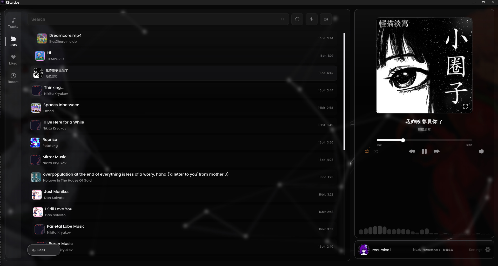
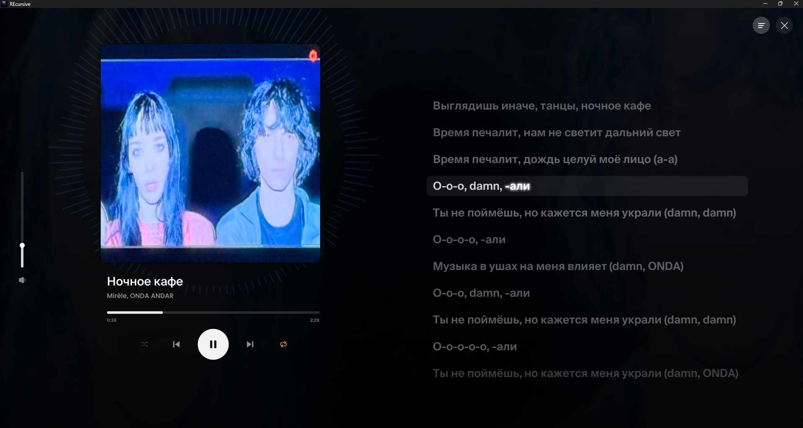
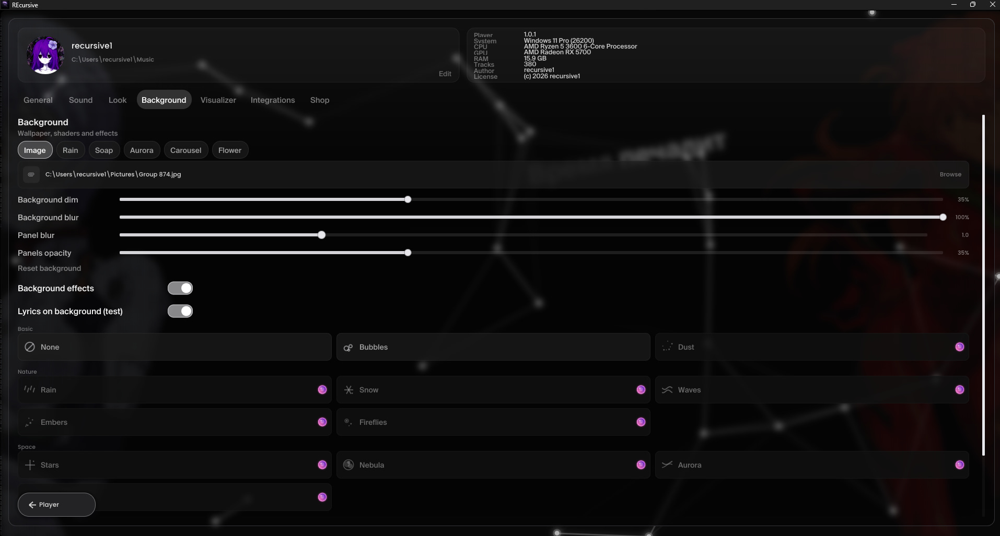
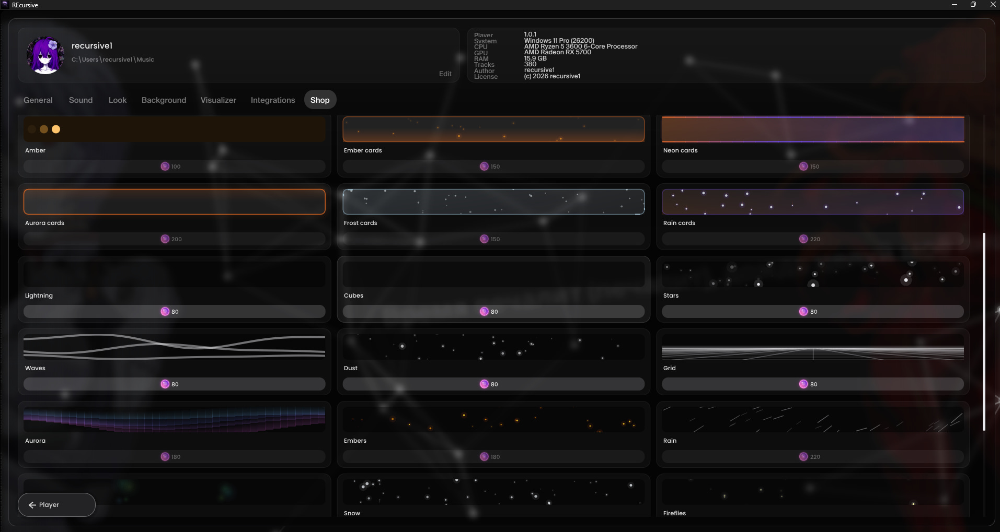
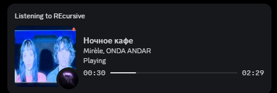

Музыка
без чужих правил
REcursive — локальный плеер с лучшей кастомизацией
Нативный плеер для Windows. Живые обои, текст песен слово в слово, эквалайзер на десять полос и оформление, которое настраивается под тебя.
СкачатьВерсия 1.0.1 · обновлено 26 сентября 2026




Особенности
Звук
Пресеты, предусиление и настройка ширины полос.
Треки перетекают друг в друга без паузы.
Расширение стереобазы одним переключателем.
Текст песен
Строки подсвечиваются ровно в такт, а не целиком.
Крупные строки плывут прямо за интерфейсом и подсвечиваются в такт.
Оформление
Снег, метеоры, сияние, туманность и другие.
Любая картинка или видео в mp4 и mov.
Готовые палитры плюс свои цвета для панелей, рамок и акцента.
Тлеющие, неоновые, сияющие, морозные, с каплями — с двумя своими цветами.
Цвет подхватывается с обложки текущего трека.
Библиотека
Раскладка на диске сразу становится структурой библиотеки.
Вытягиваются автоматически и сворачиваются в короткие названия.
Грустное, ночное, тренировка — и любые собственные.
Сто последних треков отдельной вкладкой.
Система

Стильный Discord RPC.
Скачивание через бота сразу в папку с музыкой.
От 30 до 144 или вертикальная синхронизация.
Ещё
Валюта капает за прослушивание, на неё открываются темы и эффекты.
Сколько слушал и что чаще всего — раз в месяц.
Русский, английский, китайский, японский.
Не Electron и не браузер внутри. Обычное приложение для Windows.
Интерфейс рисует видеокарта, поэтому анимации не съедают процессор.
Забирай
Скачать для WindowsВерсия 1.0.1 · обновлено 26 сентября 2026
recursive-setup.exe · 49 МБ · Windows 10/11 x64
SHA-256: 892B2217B28C521C295BDCF29A1B8AA652597167B31EEDE4569D661DE9F33ECB
Установщик не подписан, сам плеер подписан самоподписанным сертификатом. SmartScreen может предупредить при первом запуске — это ожидаемо для приложения без коммерческого сертификата. Файл можно проверить по хешу.